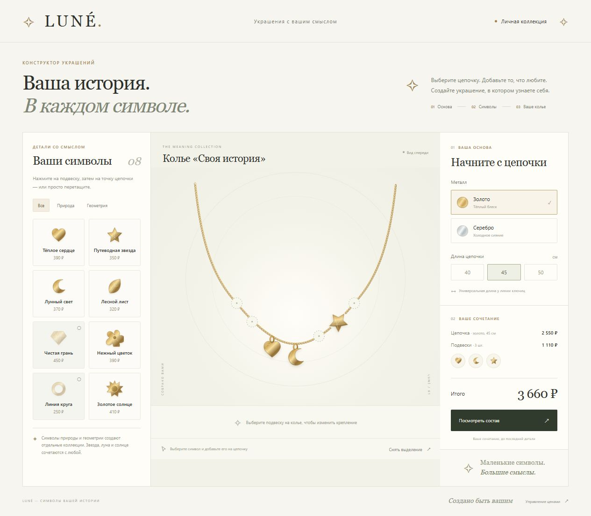

(01)
Украшение с характером
01 / Веб-интерфейс · конфигуратор
LUNÉ / конструктор украшений

Семь позиций. Два типа крепления. Одно украшение, которое собирается по вашим правилам.
Выбор металла и длины, перенос подвесок и проверка совместимости коллекций. Стоимость пересчитывается при каждом изменении; цены обновляются через CSV.